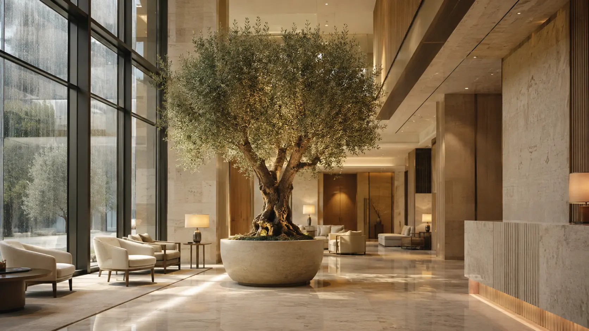

How to Evaluate Artificial Plants Before Specifying a Commercial Project

A rendering can make almost any artificial plant look convincing. The real test begins when the product is viewed at arm’s length, installed under project lighting, and expected to perform in a busy commercial environment for years.
For designers, procurement teams, hospitality operators, and facility managers, evaluation should go beyond choosing a species and height. Realism, material construction, safety documentation, environmental exposure, installation details, and supplier support all affect whether an installation feels premium or becomes an expensive distraction.
Start With the Viewing Conditions
A product that works above eye level may not be suitable beside a reception desk. Before comparing samples, define how people will experience the installation:
- Viewing distance: close-up applications demand finer leaf texture, better color variation, and cleaner stem transitions.
- Lighting: direct sunlight, warm hospitality lighting, and bright office lighting reveal different details.
- Traffic: corridors and public areas need secure construction and foliage that tolerates occasional contact.
- Placement: indoor, covered outdoor, and fully exposed locations require different material decisions.
Send the supplier a photograph, plan, or rendering whenever possible. Context makes recommendations more useful than a product code alone.
1. Examine Realism at More Than One Distance
Step back first. The silhouette should feel balanced and naturally irregular rather than perfectly symmetrical. Branches should create believable layers, with enough negative space that the plant does not read as a dense plastic mass.
Then move closer. Look for varied leaf angles, subtle differences in tone, convincing vein detail, and stems that transition naturally into branches. On artificial trees, the connection between foliage and trunk is especially important because obvious joints quickly break the illusion.
Finally, photograph the sample under the lighting planned for the project. Phone cameras often reveal shine, repeated patterns, or unrealistic color that the eye initially overlooks.
2. Check the Materials, Not Just the Species Name
Two products described as an “artificial olive tree” can be constructed very differently. Ask what the foliage, stems, trunk, internal frame, and planter components are made from.
- Foliage: confirm the material and surface finish, including whether it is appropriate for close viewing.
- Trunk: determine whether it uses natural wood, molded construction, or a combination.
- Internal support: large trees need stable engineering, not simply more branches.
- Base and planter: clarify how the product will be weighted, secured, finished, and accessed during installation.
Material information also helps the design team compare like with like instead of making a decision from photography alone.
3. Verify Fire Documentation for the Actual Product
Commercial projects may require fire-performance documentation, but a general statement that a product is “fire rated” is not enough. Ask which standard was used, which component or finished assembly was tested, and whether the documentation applies to the item being proposed.
Requirements vary by jurisdiction, occupancy, placement, and reviewing authority. The project’s architect, fire consultant, or local authority should confirm what documentation is acceptable. Our NFPA 701 checklist provides a useful starting point for organizing supplier questions and submittals.
4. Match UV Protection to the Exposure
“Outdoor suitable” should lead to more questions. A covered terrace, a coastal rooftop, and a pool deck in full sun create very different exposure conditions.
Document the hours of direct sunlight, climate, wind, salt exposure, heat, and whether the installation is sheltered. Then ask how UV protection is incorporated and what maintenance or warranty limitations apply. Use our UV protection guide to brief your supplier more precisely.
5. Test How the Sample Behaves
A material sample is useful because it lets the team evaluate more than appearance. Handle it. Bend the stem gently. View the leaf from both sides. Place it next to the proposed finishes. Check it under daylight and artificial light.
For larger trees or green walls, request representative foliage and finish samples rather than expecting an entire product to be shipped for approval. The goal is to verify the visible materials, color direction, texture, and construction quality before committing to production.
A simple sample review checklist
- View from the project’s expected distance
- Photograph under the intended lighting
- Compare against flooring, wall, and planter finishes
- Review the front, back, edges, stems, and attachment points
- Confirm fire and UV requirements separately
- Record the approved sample for production reference
6. Review Customization and Installation Early
Custom height, canopy width, trunk shape, foliage density, planter selection, and anchoring can change both appearance and price. Resolve those points before final approval, especially when products must fit elevators, doorways, loading docks, or restricted installation windows.
For statement trees, confirm whether final shaping happens at the factory or on site. For green walls, establish panel dimensions, edge treatment, access conditions, substrate requirements, and how corners or openings will be finished.
7. Evaluate the Supplier’s Process
A strong commercial supplier should help translate design intent into an order that can be manufactured, documented, shipped, and installed. Look for clear answers, relevant samples, accurate specifications, organized submittals, realistic lead times, and a defined approval process.
The best evaluation is therefore both physical and operational: does the sample meet the design standard, and can the supplier reliably reproduce that standard across the complete project?
Make the Approval Tangible
Digital images are valuable for narrowing options, but they should not carry the entire approval decision. A representative material sample gives stakeholders something concrete to review and creates a shared reference for color, texture, and quality.
Evaluate the material before you specify
Tell us about your commercial project and we’ll recommend a representative complimentary material sample for review.
Request a Free Material Sample